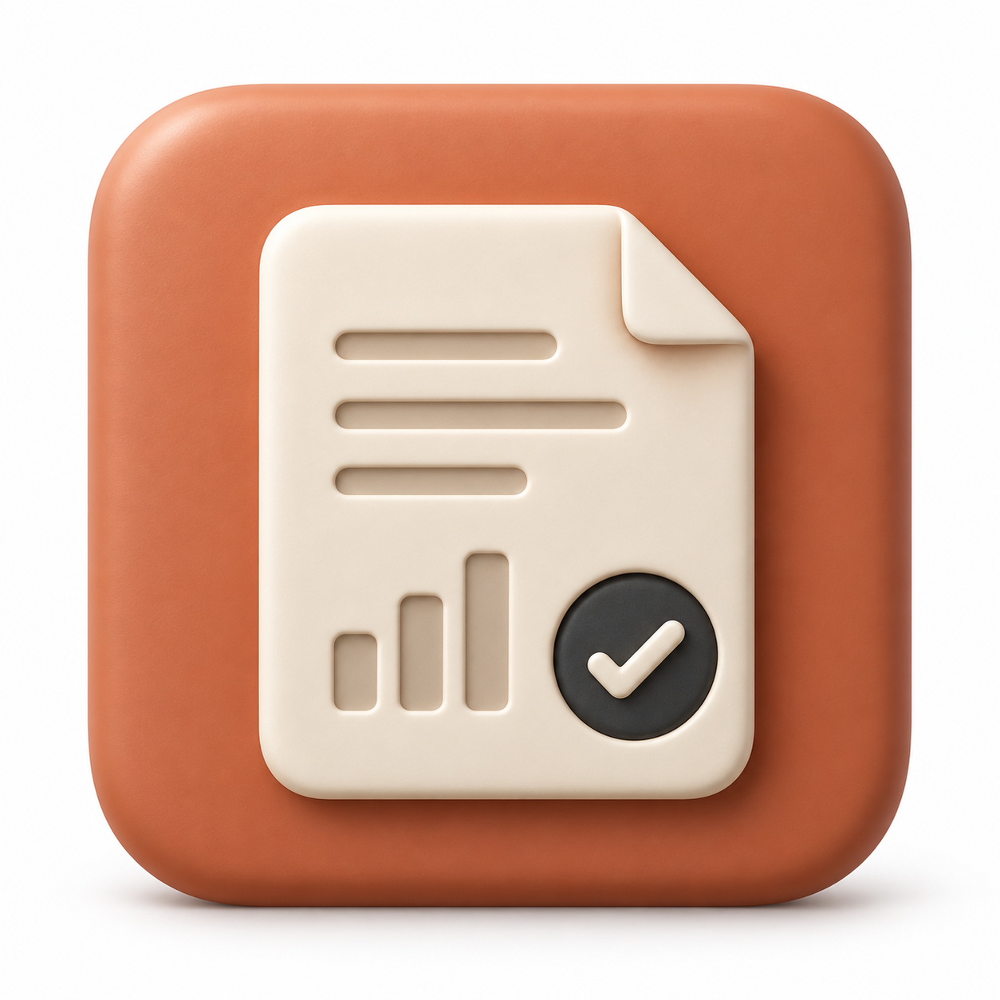
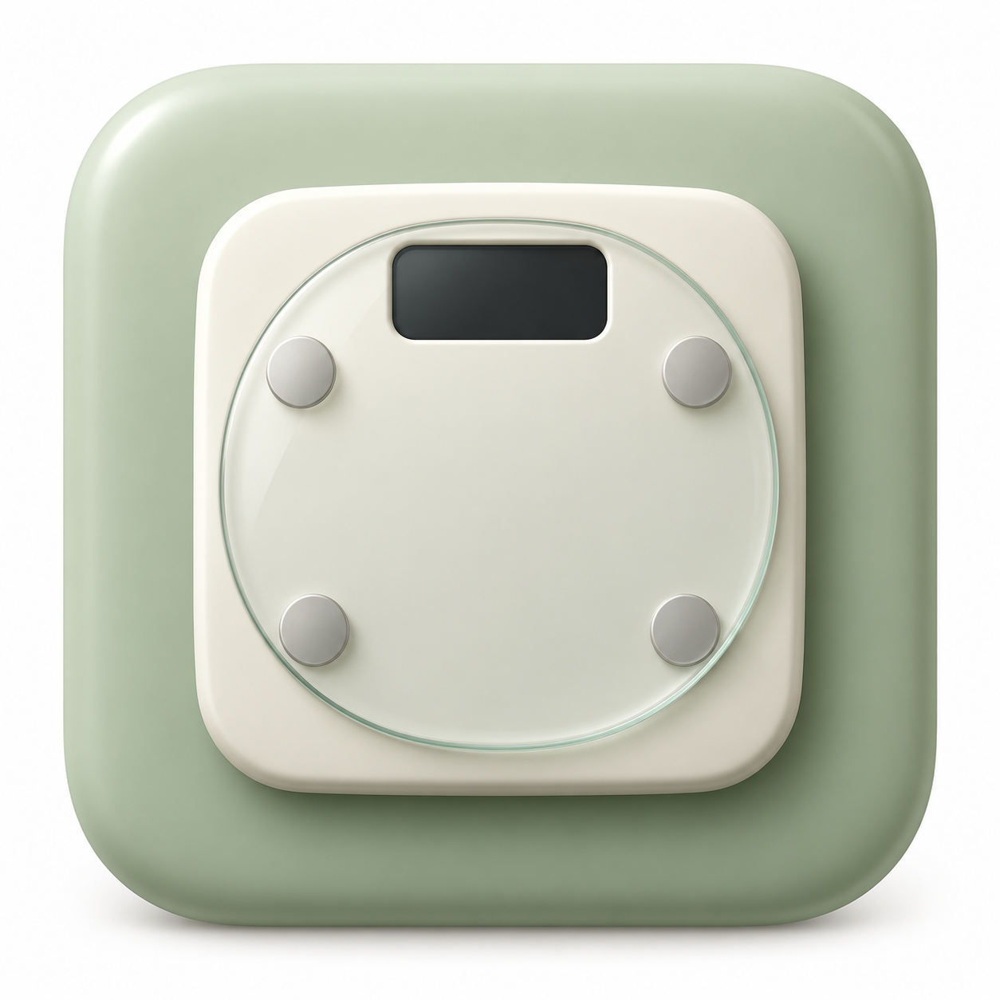

Gagan Bhattarai
Computer Science co-op student at McMaster University, with a minor in Mathematics. Graduating April 2028.
I build full-stack applications and iOS apps. Here’s some of my work.
Experience
Software Developer · ScaleTrack
2026- Independently built and published a native iPhone weight tracker with SwiftUI and SwiftData, including manual logging, trend charts, goals, progress photos, and export.
- Integrated photo-based weight entry using Vision OCR and optional HealthKit syncing for a local-first experience.
- Reached 1.41K App Store impressions, 112 product-page views, 43 first-time downloads, and a 4.41% conversion rate without advertising.
App Store figures reported in my résumé, not live analytics.
CS / Math Tutor · Columbia International College
2025- Tutored 300+ international students in Grades 9 to 12 in Advanced Functions, Calculus & Vectors, and Data Management.
- Adapted individualized instruction to close knowledge gaps and build confidence.
Project Lead · 2nd Nature Safety Consulting / Riipen Labs
2026- Led a cross-functional team of five to deliver a customer-acquisition strategy within a two-week deadline.
- The strategy projected a 30% increase in client reach. This was a forecast, not a measured outcome.
Software Developer · McMaster Sumobots Team
2024 to 2025- Improved robot movement accuracy by 20% by implementing a PID control loop in embedded C++ on an Arduino Nano.
- Debugged I2C and PWM faults during competition.
Projects

Verdict
2026A web app that researches startup ideas and produces a report with cited evidence.
Built 12 API routes, live research updates, saved reports, and server-side payment and access controls.

ScaleTrack
2026An iPhone weight tracker I independently built and published on the App Store.
Local weight logging, trend charts, goals, progress photos, and export. Photo-based entry and Apple Health sync are optional.
Thru.ai
2026A team hackathon project for voice ordering at a drive-through, built in about one day.
My work: the React/Node foundation, voice-service integration, and live order synchronization between the kiosk and kitchen.
Student Performance Predictor
2026An academic project comparing models that predict student grade categories.
Prepared 86K records from three datasets. Compared Logistic Regression with a neural network.
SafeBite
2026An ingredient-label scanner that checks text against allergen and dietary preferences.
A deterministic Swift parser produces the safety result. Optional AI explanations cannot override it.
MathyPath
2025A mathematics-learning prototype with lessons and short quizzes.
The inspected local version includes six lessons, three quiz components, and saved browser state.
Math animation workflow
2024A workflow for creating animated mathematics lessons.
Combines rendered mathematical explanations with audio processing and validation scripts.